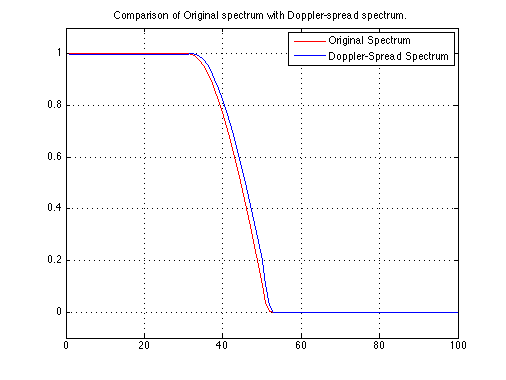

Doppler Spectrum Spreading
Copyright 2007 Telecommunications Lab
Fs = 100; % Sampling frequency 50000 Hz T = 2/100; % Symbol time interval [s]. t = -40*T:1/Fs:40*T; % Time vector (sampling intervals) t = t+0.00000001; % Otherwise, the denominator would be zero at t=0 f = 0:1/Fs:2; r = 0.25; % Roll-off factor ts=10^-3; % Channel Sampling Rate fd=2; % Maximal Doppler Shift chan = rayleighchan(ts,fd,0,1); % Channel Design % Root Raised-Cosine FIR filter p = T*((4*r*cos(pi*t/T*(1+r))+(T./t).*sin(pi*(t/T)*(1-r))))./((1-(4*r*(t/T)).^2)*pi*sqrt(T)); %normed on the viewed region % Cosine-Roll-Off frequency response P=abs(fft((p).*(hamming(length(p)))')); p_ = filter(chan,p); P_=abs(fft((p_).*(hamming(length(p_)))')); % Plotting plot(P/max(P),'r','LineWidth',1.5);hold on;plot(P_/max(P_),'b','LineWidth',1.5); legend('Original Spectrum','Doppler-Spread Spectrum');title('Comparison of Original spectrum with Doppler-spread spectrum.'); axis([0 100 -.1 1.1]); grid on; hold off;